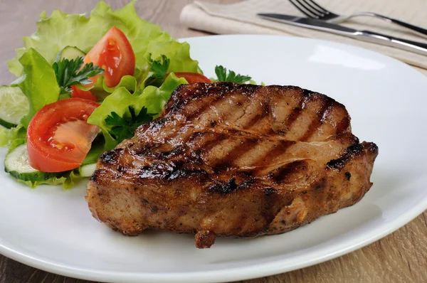

Filé de Dourada, empanados na farinha panko, sequinho e crocantes.

Postas de frango, empanados e fritos em alta pressão, sequinhos e crocantes.

Pedaços de carne "peito" com bastante batata cozida e temperos aromatizados.

Pedaços de franco cozidos, com bastante batata de verduras frescas.

Pedaços da porco, barriga, temperados sob medida, com bastante batata e temperos aromatizados.

Picanha maturada com 3 cm de gordura, assados na temperatura ideal.

Bisteca com leve gordura, assadas na brasa sob a temperatura ideal.

Toscanas de frango, temperadas e assadas na brasa na temperatura ideal.

Frango assado na brasa, temperado e regado com molho especial, assado na temperatura ideal.

Panceta de porco trabalhado na manteiga, super suculentas, assados na brasa em temperatura ideal.

Acompanhamentos

Bebidas